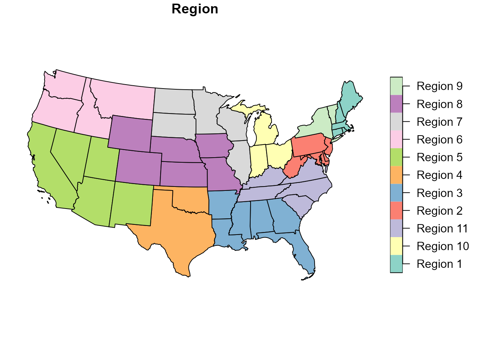
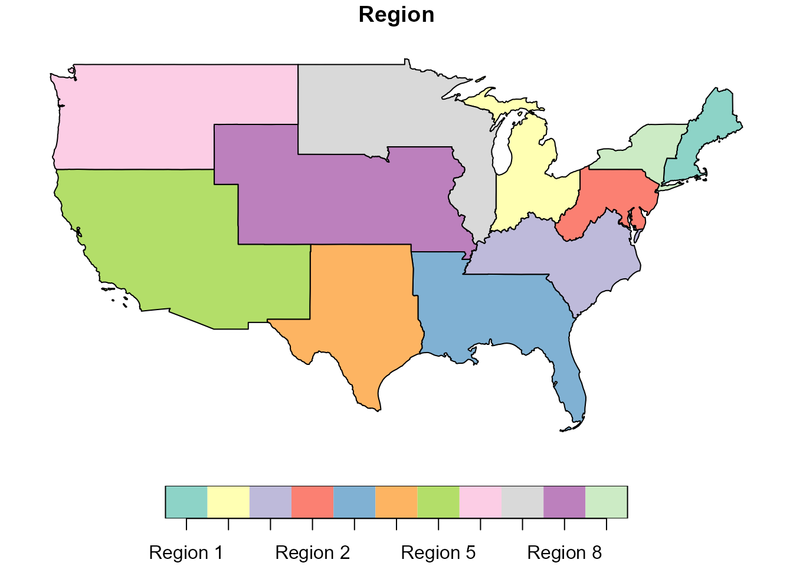
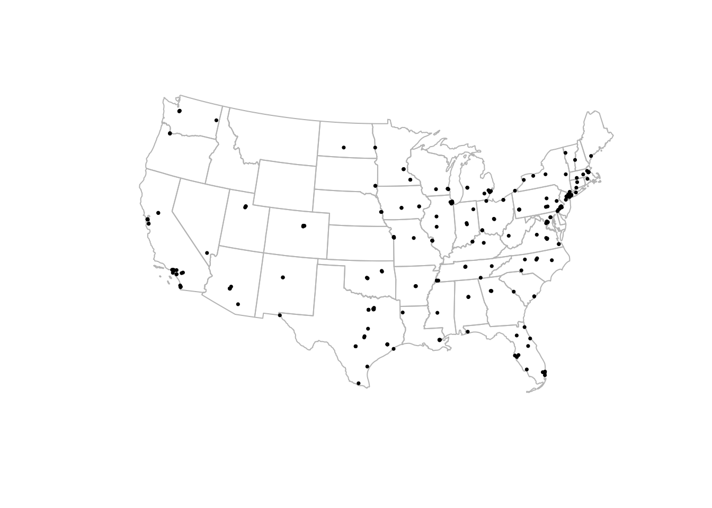

title: “Mapping transplant geography” output: rmarkdown::html_vignette vignette: > % % % ————————-
library(sRtr)
library(sf)
#> Warning: package 'sf' was built under R version 4.3.3
#> Linking to GEOS 3.11.2, GDAL 3.8.2, PROJ 9.3.1; sf_use_s2() is TRUE
library(dplyr)
#> Warning: package 'dplyr' was built under R version 4.3.3
#>
#> Attaching package: 'dplyr'
#> The following objects are masked from 'package:stats':
#>
#> filter, lag
#> The following objects are masked from 'package:base':
#>
#> intersect, setdiff, setequal, unionOverview
The sRtr package includes helper functions and spatial
datasets for working with transplant geography in R.
This vignette introduces basic mapping of:
- HRSA transplant center locations
- OPO service areas
- UNOS/OPTN regions
The examples use sf, which is the standard R package for
working with vector geographic data in R.
Coordinate reference systems
Spatial objects in sRtr are returned as sf
objects. For many transplant geography tasks, a projected coordinate
reference system is preferable to longitude/latitude because it allows
more appropriate distance, area, and overlay calculations.
The package commonly uses NAD83 / Conus Albers, EPSG:5070, for U.S. mapping workflows.
sf::st_crs(UNOS_regions_sf)
#> Coordinate Reference System:
#> User input: EPSG:5070
#> wkt:
#> PROJCRS["NAD83 / Conus Albers",
#> BASEGEOGCRS["NAD83",
#> DATUM["North American Datum 1983",
#> ELLIPSOID["GRS 1980",6378137,298.257222101,
#> LENGTHUNIT["metre",1]]],
#> PRIMEM["Greenwich",0,
#> ANGLEUNIT["degree",0.0174532925199433]],
#> ID["EPSG",4269]],
#> CONVERSION["Conus Albers",
#> METHOD["Albers Equal Area",
#> ID["EPSG",9822]],
#> PARAMETER["Latitude of false origin",23,
#> ANGLEUNIT["degree",0.0174532925199433],
#> ID["EPSG",8821]],
#> PARAMETER["Longitude of false origin",-96,
#> ANGLEUNIT["degree",0.0174532925199433],
#> ID["EPSG",8822]],
#> PARAMETER["Latitude of 1st standard parallel",29.5,
#> ANGLEUNIT["degree",0.0174532925199433],
#> ID["EPSG",8823]],
#> PARAMETER["Latitude of 2nd standard parallel",45.5,
#> ANGLEUNIT["degree",0.0174532925199433],
#> ID["EPSG",8824]],
#> PARAMETER["Easting at false origin",0,
#> LENGTHUNIT["metre",1],
#> ID["EPSG",8826]],
#> PARAMETER["Northing at false origin",0,
#> LENGTHUNIT["metre",1],
#> ID["EPSG",8827]]],
#> CS[Cartesian,2],
#> AXIS["easting (X)",east,
#> ORDER[1],
#> LENGTHUNIT["metre",1]],
#> AXIS["northing (Y)",north,
#> ORDER[2],
#> LENGTHUNIT["metre",1]],
#> USAGE[
#> SCOPE["Data analysis and small scale data presentation for contiguous lower 48 states."],
#> AREA["United States (USA) - CONUS onshore - Alabama; Arizona; Arkansas; California; Colorado; Connecticut; Delaware; Florida; Georgia; Idaho; Illinois; Indiana; Iowa; Kansas; Kentucky; Louisiana; Maine; Maryland; Massachusetts; Michigan; Minnesota; Mississippi; Missouri; Montana; Nebraska; Nevada; New Hampshire; New Jersey; New Mexico; New York; North Carolina; North Dakota; Ohio; Oklahoma; Oregon; Pennsylvania; Rhode Island; South Carolina; South Dakota; Tennessee; Texas; Utah; Vermont; Virginia; Washington; West Virginia; Wisconsin; Wyoming."],
#> BBOX[24.41,-124.79,49.38,-66.91]],
#> ID["EPSG",5070]]Built-in spatial datasets
The package includes state-level UNOS/OPTN region geometries and transplant center point locations.
UNOS_regions_sf
#> Simple feature collection with 49 features and 2 fields
#> Geometry type: MULTIPOLYGON
#> Dimension: XY
#> Bounding box: xmin: -2356114 ymin: 268660.9 xmax: 2258154 ymax: 3165722
#> Projected CRS: NAD83 / Conus Albers
#> # A tibble: 49 × 3
#> Region State geometry
#> * <chr> <chr> <MULTIPOLYGON [m]>
#> 1 Region 1 Connecticut (((1841099 2228944, 1855809 2243706, 1848123 2…
#> 2 Region 1 Maine (((2138226 2628218, 2141401 2631393, 2145105 2…
#> 3 Region 1 Massachusetts (((2111139 2321239, 2117588 2323418, 2126584 2…
#> 4 Region 1 New Hampshire (((1885488 2441514, 1886564 2445437, 1884951 2…
#> 5 Region 1 Rhode Island (((2006463 2276322, 2007521 2284789, 2011226 2…
#> 6 Region 2 Delaware (((1705278 2038007, 1706137 2042296, 1708323 2…
#> 7 Region 2 District of Columbia (((1610777 1928086, 1616046 1936147, 1619950 1…
#> 8 Region 2 Maryland (((1722285 1847165, 1725330 1849095, 1728392 1…
#> 9 Region 2 New Jersey (((1725281 2031759, 1726883 2034105, 1728061 2…
#> 10 Region 2 Pennsylvania (((1287712 2093650, 1286266 2102574, 1283800 2…
#> # ℹ 39 more rows
transplant_centers_sf
#> Simple feature collection with 254 features and 2 fields
#> Geometry type: POINT
#> Dimension: XY
#> Bounding box: xmin: -6126888 ymin: 19010.26 xmax: 3229480 ymax: 3014265
#> Projected CRS: NAD83 / Conus Albers
#> # A tibble: 254 × 3
#> OTCName OTCCode geometry
#> * <chr> <chr> <POINT [m]>
#> 1 MUSC Children's Hospital SCCH (1487799 1205313)
#> 2 Medical University of South Carolina SCMU (1487787 1205334)
#> 3 Avera McKennan Hospital SDMK (-57359.26 2282511)
#> 4 Sanford Health/USD Medical Center SDSV (-59647.51 2282589)
#> 5 Baptist Memorial Hospital TNBM (554364.2 1359349)
#> 6 Erlanger Medical Center TNEM (966708.3 1386691)
#> 7 Le Bonheur Children's Medical Center TNLB (538749.4 1359675)
#> 8 Methodist University Hospital TNMH (540047.1 1359139)
#> 9 Centennial Medical Center TNPV (818293 1495462)
#> 10 Saint Thomas Hospital TNST (815399.8 1492365)
#> # ℹ 244 more rowsPlotting UNOS/OPTN regions
The object UNOS_regions_sf contains state-level
geometries with a Region field. These can be plotted
directly.
plot(UNOS_regions_sf["Region"])
To plot dissolved region boundaries, use
get_hrsa_optn_regions().
optn_regions <- get_hrsa_optn_regions()
plot(optn_regions["Region"])
Plotting transplant centers
The package can download transplant center locations from the HRSA ArcGIS REST service.
centers <- get_hrsa_transplant_centers()For a vignette, it is often better to use the built-in example data rather than requiring an internet connection.
plot(sf::st_geometry(UNOS_regions_sf), border = "grey70")
plot(sf::st_geometry(transplant_centers_sf), add = TRUE, pch = 16, cex = 0.5)
Downloading current HRSA transplant center locations
To retrieve the current HRSA transplant center layer:
centers <- get_hrsa_transplant_centers()
centers |>
dplyr::select(OTC_NM, OTC_CITY, STATE_ABBR, OPO_PROVIDER_NM, Service_Lst)A simple map:
plot(sf::st_geometry(optn_regions), border = "grey70")
plot(sf::st_geometry(centers), add = TRUE, pch = 16, cex = 0.5)Plotting OPO service areas
The HRSA service also includes Organ Procurement Organization service area geography.
The detailed OPO service-area layer can be downloaded with:
opo_areas <- get_hrsa_opo_service_areas()A basic plot:
plot(opo_areas["OPO_PROVIDER_NM"])For a less cluttered map, draw only the boundaries and overlay transplant centers.
plot(sf::st_geometry(opo_areas), border = "grey70")
plot(sf::st_geometry(centers), add = TRUE, pch = 16, cex = 0.4)Adding state outlines with tigris
The tigris package is useful for adding Census boundary
layers, such as states or counties.
library(tigris)
states <- tigris::states(cb = TRUE, year = 2023) |>
sf::st_transform(sf::st_crs(optn_regions))
plot(sf::st_geometry(states), border = "grey80")
plot(sf::st_geometry(optn_regions), add = TRUE, border = "black", lwd = 2)
plot(sf::st_geometry(transplant_centers_sf), add = TRUE, pch = 16, cex = 0.4)Filtering by organ or service list
The HRSA transplant center layer includes a Service_Lst
field. Depending on the analysis, this can be used to identify centers
that list specific transplant services.
kidney_centers <- centers |>
dplyr::filter(grepl("Kidney", Service_Lst, ignore.case = TRUE))
plot(sf::st_geometry(optn_regions), border = "grey70")
plot(sf::st_geometry(kidney_centers), add = TRUE, pch = 16, cex = 0.5)Working with geometries
Because these are sf objects, they can be used with
standard spatial operations.
For example, you can check which transplant centers fall within a UNOS/OPTN region.
centers_with_region <- sf::st_join(
centers,
optn_regions |> dplyr::select(Region)
)
centers_with_region |>
sf::st_drop_geometry() |>
dplyr::count(Region, sort = TRUE)